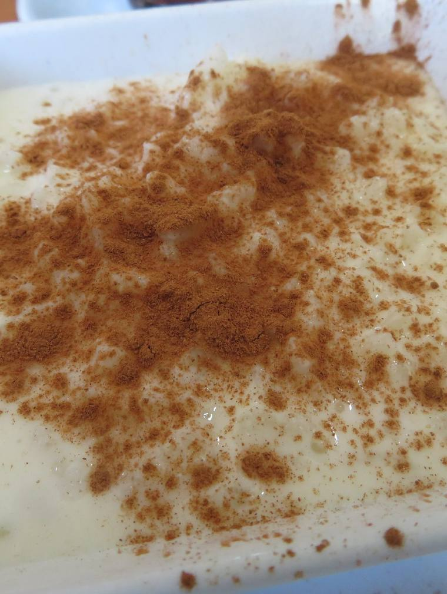

Desserts

Desserts
Arroz con leche
Riz au lait des Asturies
Préparation : 15 min
Cuisson : 2 h 15
Ingrédients (pour 6 personnes)
- 150 g de riz rond
- 2 l de lait
- 150 g de sucre
- 100 g de beurre
- ½ citron (le zeste)
- 1 bâton de cannelle
- vanille, cannelle moulue
Quantités adaptées. Les temps de cuisson ne sont pas recalculés.
- Cuire doucement le riz dans presque deux fois son volume d’eau, presque à sec.
- Chauffer à part lait, sucre, cannelle et zeste, verser sur le riz.
- Après 1 heure à feu doux, ajouter le beurre en remuant.
- Cuire encore 1 heure, en remuant souvent, jusqu’à consistance de crème épaisse.
- Retirer zeste et cannelle, répartir, poudrer de cannelle, ou de sucre vanillé à caraméliser.
D’après Spain.info, office espagnol du tourisme. Traduit et reformulé.